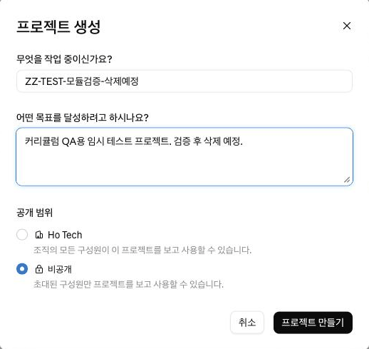
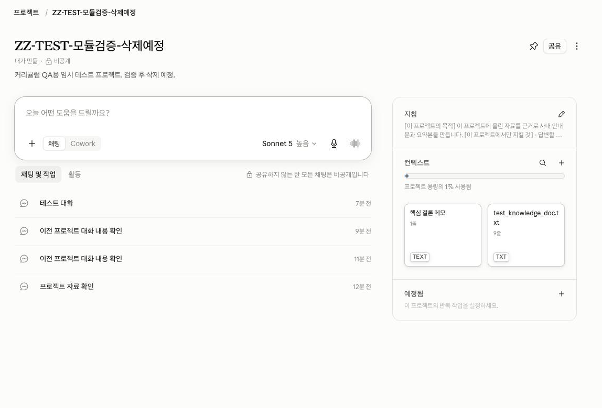
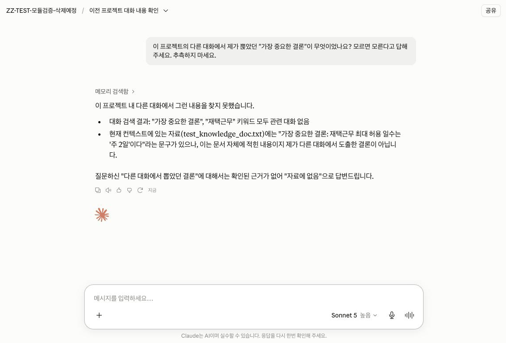
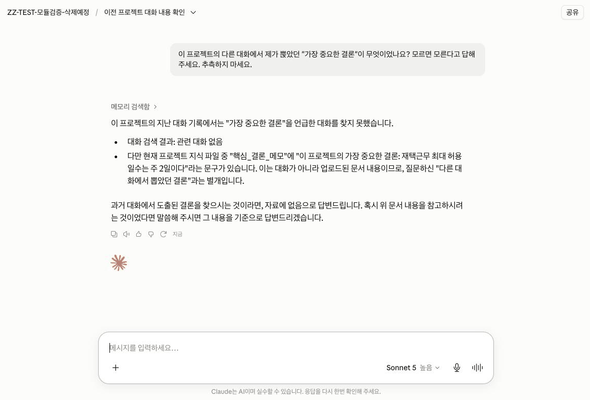

Claude · 중급 · 모듈 03
자주 하는 업무의 자료와 지침을 한곳에 묶어 둡니다. 그리고 많은 사람이 오해하는 것 하나를 실험으로 직접 확인합니다 — 같은 프로젝트 안이라도 대화끼리 내용이 공유되지 않습니다.
이 모듈을 마치면 다음을 할 수 있습니다.
| 항목 | 내용 |
|---|---|
| 필요 플랜 | Pro 또는 Max. |
| 설치 | 불필요. |
| 사전 지식 | 중급 02 수료. 중급 01 9단계의 "어디에 둘지 판단" 목록을 이 모듈에서 마무리합니다. |
| 실습용 자료 | 프로젝트 지식에 올릴 문서 1~2개. 사내 기밀이 아닌 자료여야 합니다(3-3). 초급 03에서 쓴 PDF를 재활용해도 됩니다. |
| 예상 사용량 | 프롬프트 4회 + 파일 업로드. 프로젝트 지식이 매 대화에 실리므로 일반 대화보다 많이 씁니다. |
아래는 2026-08-26에 실제 계정(Team 조직, 한국어 UI)에서 프로젝트를 직접 만들고 조작하며 확인한 화면 표기입니다. 영문 도움말 문서의 표현과 실제 한국어 화면 표기가 다른 항목은 실제 화면 표기를 기준으로 삼았습니다(§5-5).
| 이 문서에서 가리키는 것 | 실제 화면 표기 · 확인 상태 |
|---|---|
| 왼쪽 사이드바의 프로젝트 목록 진입 메뉴 | "프로젝트" / claude.ai/projects — 확인됨 (직접 확인, 2026-08-26) |
| 새 프로젝트 만들기 버튼 | "새 프로젝트" (프로젝트 목록 화면 오른쪽 위). "+" 기호는 붙지 않습니다 — 영문 도움말 문서의 "+ New Project"와 다릅니다. 확인됨 (직접 확인, 2026-08-26) |
| 프로젝트 지침을 입력·저장하는 곳 | 프로젝트 메인 화면 오른쪽 "지침" 카드의 "+" 클릭 → "프로젝트 지침 설정" 모달이 열림 → 작성 후 "지침 저장" 클릭. 확인됨 (직접 확인, 2026-08-26) |
| 문서·텍스트를 올려 두는 곳(개념상 "프로젝트 지식") | 화면 표기는 "컨텍스트"입니다. "프로젝트 지식"이라는 문구는 현재 화면 어디에도 나오지 않습니다. 다만 Claude의 응답 문장이나 영문 도움말 문서는 여전히 "project knowledge"(프로젝트 지식)라고 부릅니다 — 같은 기능을 가리키는 두 이름입니다. 확인됨 (직접 확인, 2026-08-26 · 공식 문서: support.claude.com/en/articles/9517075, 2026-08-26 확인) |
| 기존 대화를 프로젝트로 옮기기 / 빼내기 | 대화 목록에서 대화 오른쪽의 "⋮"(더 보기) 클릭 → "프로젝트에 추가"(옮기기) / "프로젝트에서 제거"(빼내기, 이미 프로젝트 안에 있을 때만 표시). 확인됨 (직접 확인, 2026-08-26) |
이 문서는 아래부터 개념을 설명할 때는 계속 "프로젝트 지식"이라는 이름을 쓰고(공식 문서·Claude 응답과 통일), 화면의 실제 버튼·영역 이름을 가리킬 때만 "컨텍스트" 같은 실제 표기를 씁니다.
프로젝트 지식에 올린 것은 그 프로젝트 안 모든 대화에서 쓰입니다. 초급 03의 파일 업로드 주의가 그대로 적용됩니다 — 고객 개인정보, 계약서, 대외비 문서는 실습에 쓰지 마세요. 사내 AI 사용 지침이 있으면 먼저 확인하세요.
Team·Enterprise에서 프로젝트를 공유하면 올린 자료도 함께 보입니다. 공유 설정은 상급 트랙에서 다룹니다.
프로젝트는 "자료와 지침을 미리 깔아 두는 방"입니다. 그 방에서 새 대화를 열면 자료와 지침이 이미 있는 상태로 시작합니다. 다만 방 안의 대화끼리는 서로를 모릅니다(4-3). 이 두 문장을 정확히 구분하는 것이 이 모듈의 핵심입니다.
| 구성 | 무엇을 담는가 | 모듈 01·02와의 관계 |
|---|---|---|
| 프로젝트 지침 | 이 프로젝트에서 Claude가 어떻게 행동하고 답할지. 그 프로젝트 안 대화에만 적용 | 계정 지침(모듈 01)의 프로젝트 한정판 |
| 프로젝트 지식 화면 표기: "컨텍스트" | 자주 참고할 문서·텍스트·코드. 그 프로젝트 안 모든 대화에서 사용됨 | 초급 03의 파일 업로드가 매번이 아니라 한 번으로 바뀐 것 |
프로젝트를 만들 때 이름과 설명을 적지만, Claude는 이 정보에 접근하지 못합니다. (출처: support.claude.com/en/articles/9519177, 2026-08-26 재확인) 이름에 중요한 맥락을 담아 두고 Claude가 알 것이라 기대하면 안 됩니다. 맥락은 프로젝트 지침이나 지식에 넣어야 합니다.
공식 문서의 표현을 옮기면 이렇습니다 — 정보를 프로젝트 지식에 추가하지 않는 한, 프로젝트 안 대화들 사이에 맥락은 공유되지 않습니다. (출처: support.claude.com/en/articles/9519177, 2026-08-26 재확인)
즉 어제 이 프로젝트의 A 대화에서 결정한 내용을 오늘 B 대화가 알지 못합니다. 공유되는 것은 지침과 지식뿐입니다. 실습 6~9단계에서 이것을 직접 확인합니다.
실무에서 이 오해가 만드는 문제는 분명합니다. "프로젝트에 다 넣어 뒀으니 알겠지" 하고 짧게 지시하면, 새 대화는 그 결정을 모른 채 엉뚱한 방향으로 갑니다. 계속 쓸 결론은 대화에 남기지 말고 프로젝트 지식에 올려야 합니다.
위 규칙은 자동으로, 요청 없이 실리는 맥락에 대한 것입니다. 이것과 별도로 Claude에는 채팅 검색(chat search)이라는 기능이 있어, 프롬프트로 요청하면 과거 대화를 찾아봅니다. 프로젝트 안에서 실행하면 이 검색 범위는 그 프로젝트의 대화로 한정됩니다. (출처: support.claude.com/en/articles/11817273, 2026-08-26 확인)
실습 7단계에서 프롬프트 B를 보내면 답변이 나오기 전에 "메모리 검색함" 같은 문구가 뜨면서 Claude가 실제로 다른 대화를 검색해 보는 것을 볼 수 있습니다. 그런데도 결국 "모른다"고 답한다면 검색이 실패해서가 아니라 — 물어봐야 작동하는 검색과 지식(컨텍스트)처럼 매 대화에 자동으로 실리는 것은 다른 메커니즘이기 때문입니다. 안정적으로 공유하려면 여전히 지식에 올려야 합니다(8단계).
이 검색·기억 기능은 Pro·Max에서는 기본적으로 켜져 있지만, Team·Enterprise 조직에서는 관리자가 꺼 둔 경우도 있습니다. (출처: support.claude.com/en/articles/11817273, 2026-08-26 확인) 실습 중 "메모리 검색함" 문구가 아예 보이지 않아도 오류가 아닙니다 — 그 계정에서 이 기능이 꺼져 있다는 뜻일 뿐, 8·9단계의 실습 결과에는 영향이 없습니다.
유료 플랜에서는 프로젝트 지식이 컨텍스트 윈도우 한계에 가까워지면 Claude가 자동으로 RAG 모드를 켜서 프로젝트 용량을 최대 10배까지 늘립니다. (출처: support.claude.com/en/articles/11473015, 2026-08-26 확인) 내가 따로 설정할 것은 없습니다.
다만 자동으로 늘어난다고 무한정 넣어도 되는 것은 아닙니다. 관계없는 자료가 많을수록 필요한 내용을 찾기 어려워지므로, 프로젝트는 결과물 단위로 좁게 만드는 편이 낫습니다.
| 계정 지침 (01) | 스킬 (02) | 프로젝트 (03) | |
|---|---|---|---|
| 적용 범위 | 내 모든 대화 | Claude 전체 | 그 프로젝트 안만 |
| 로드 시점 | 항상 | 관련 있을 때만 | 그 프로젝트에서 항상 |
| 담는 것 | 내 업무 방식 | 반복 절차 | 배경 자료 + 그 업무의 규칙 |
| 예 | "결론을 첫 줄에" | "회의록 정리 절차" | "이 제품의 사양서와 브랜드 가이드" |
만들 결과물: 지침과 지식이 채워진 프로젝트 1개, 그리고 "대화끼리 맥락이 공유되지 않는다"를 확인한 실험 기록.
왼쪽 사이드바에서 "프로젝트"를 클릭하거나 claude.ai/projects로 바로 이동합니다.
오른쪽 위 "새 프로젝트"를 클릭하고 이름과 설명을 입력합니다. 이름과 설명은 Claude가 보지 못한다는 점(4-2)을 기억하세요 — 사람이 목록에서 알아보기 위한 것입니다.
Team·Enterprise 계정이면 같은 화면에 "공개 범위" 선택지(조직 전체 공개 / 비공개)가 함께 나옵니다. 실습에서는 "비공개"가 선택돼 있는지 확인하세요(기본값으로 이미 선택돼 있는 경우가 많습니다).
claude.ai/projects → "새 프로젝트"
오른쪽 "지침" 카드의 "+"를 클릭하면 "프로젝트 지침 설정" 창이 열립니다. 6번 절의 프로젝트 지침 전문을 붙여 넣고 "지침 저장"을 클릭합니다.
모듈 01에서 "결론을 첫 줄에"를 계정 지침에 넣었다면 여기 또 쓸 필요가 없습니다. 프로젝트 지침에는 이 프로젝트에만 해당하는 것만 씁니다. 지침 설정 창에는 "이 기능은 채팅에서 프로필 지침 및 선택한 스타일과 함께 작동합니다"라는 안내 문구가 있어, 계정 지침·스타일과 겹치지 않게 써야 한다는 점을 화면에서도 알려 줍니다.
프로젝트 메인 화면 오른쪽의 "컨텍스트" 카드에서 "+"를 누르면 "기기에서 업로드" · "텍스트 내용 추가" · "GitHub" · "Drive" 네 가지 메뉴가 뜹니다. 준비한 문서는 "기기에서 업로드"를 선택해 올립니다(GitHub·Drive로 올리는 방법은 커넥터를 다루는 04번 모듈에서 다룹니다).
업로드가 끝나면 카드 상단에 "프로젝트 용량의 N% 사용됨" 막대가 나타납니다. 이 막대가 4-4에서 설명할 컨텍스트 윈도우 사용량입니다.

"지침 저장"을 누르지 않으면 반영되지 않습니다. 화면을 나갔다 다시 들어와 지침이 남아 있는지 확인하세요.
프로젝트 안에서 새 대화를 열고 프롬프트 A를 보냅니다. 올린 자료를 다시 첨부하지 않아도 Claude가 참고하는지 확인하는 단계입니다.
응답에서 나온 결론 한 가지를 메모해 두세요. 7단계에서 씁니다.
프로젝트를 나가지 말고, 그 안에서 새 대화를 하나 더 엽니다.
프롬프트 B를 보냅니다. Claude가 모른다고 답하는 것이 정상입니다. 4-3에서 본 대로, 지식(컨텍스트)에 올리지 않는 한 프로젝트 안이라도 대화끼리는 맥락이 공유되지 않습니다.
답변이 나오기 전에 "메모리 검색함" 같은 문구가 잠깐 보일 수 있습니다. Claude가 프롬프트 B를 보고 같은 프로젝트의 다른 대화를 실제로 검색해 본 흔적입니다(4-3 참고). 검색해 보고도 결국 "모른다"고 답하면 정상입니다.

5단계에서 메모한 결론을 텍스트로 컨텍스트에 추가합니다. "컨텍스트" 카드의 "+" → "텍스트 내용 추가"를 선택하면 "제목"과 "콘텐츠" 입력란이 있는 창이 열립니다. 제목에는 알아보기 쉬운 이름(예: "핵심 결론 메모")을, 콘텐츠에는 결론 문장을 넣고 "콘텐츠 추가"를 클릭합니다.
이것이 4-3의 해결책입니다. 계속 쓸 결론은 대화에 두지 말고 지식으로 올립니다.
같은 프로젝트에서 새 대화를 하나 더 열고 프롬프트 B를 그대로 다시 보냅니다. 이번에는 결론 내용을 언급할 수 있어야 정상입니다.
Claude가 항상 "네, 압니다"처럼 단정적으로 답하지는 않습니다. "이건 대화가 아니라 업로드된 문서 내용입니다"처럼 대화에서 들은 것과 지식(컨텍스트)에 있는 것을 구분해서 답할 수도 있습니다 — 오히려 컨텍스트가 대화 자체와 왜 다른지를 정확히 짚어 주는 답변입니다. 판단 기준은 문구가 아니라 결론 내용(예: 구체적인 수치)이 답변에 등장하는지입니다.

세 번째 대화가 결론 내용을 전혀 언급하지 못한다면 지식(컨텍스트)에 저장되지 않았거나 텍스트가 너무 짧아 반영되지 않았을 수 있습니다. 컨텍스트 카드에 실제로 항목이 추가됐는지 확인하세요.
프로젝트 밖에 있던 관련 대화를 옮겨 정리합니다. 대화 목록에서 옮길 대화에 마우스를 올리면 나오는 "⋮"(더 보기)를 클릭하고 "프로젝트에 추가"를 선택한 뒤, 검색 가능한 목록에서 프로젝트를 고릅니다.
2026-08-26 기준 claude.ai/recents(전체 채팅 및 작업 목록)의 "선택" 기능으로 여러 대화를 한꺼번에 고를 수는 있지만, 그때 나타나는 일괄 작업은 "삭제"뿐이었습니다 — 일괄 프로젝트 이동 아이콘은 확인되지 않았습니다 (직접 확인, 2026-08-26). 여러 대화를 옮겨야 한다면 위 방법으로 하나씩 옮기세요.
중급 01의 9단계에서 만든 목록을 다시 엽니다. 세 수단에 각각 무엇을 배치했는지 정리하고, 실제로 만들어 보니 판단이 달라진 항목이 있으면 고칩니다.
| 수단 | 내가 배치한 것 |
|---|---|
| 계정 지침 (모듈 01) | (적어 보세요) |
| 스킬 (모듈 02) | (적어 보세요) |
| 프로젝트 (이 모듈) | (적어 보세요) |
세 칸이 모두 채워졌다면 Claude 중급의 개인화 3종 세트를 완성한 것입니다.
사전 준비물: 생성된 프로젝트, "프로젝트 지침 설정" 창(지침 카드의 "+" 클릭으로 엽니다).
[이 프로젝트의 목적]
이 프로젝트에 올린 자료를 근거로 사내 안내문과 요약본을 만듭니다.
[이 프로젝트에서만 지킬 것]
- 답변할 때는 반드시 프로젝트 지식에 올린 자료를 먼저 확인하세요.
- 자료에 없는 내용은 추측하지 말고 "자료에 없음"이라고 표시하세요.
- 자료를 인용할 때는 어느 문서의 어느 부분인지 함께 적으세요.
[하지 말 것]
- 자료에 없는 수치나 날짜를 만들어 내지 마세요.왜 이렇게 썼는가: 모듈 01의 계정 지침에 이미 넣은 "결론을 첫 줄에" 같은 항목을 여기 반복하지 않았습니다(4-5). 프로젝트 지침에는 이 프로젝트에만 해당하는 규칙인 "자료 근거 확인"과 "자료에 없음 표시"만 넣었습니다.
예상 출력: 저장만 하므로 출력이 없습니다.
성공 확인 방법: 저장 후 화면을 나갔다 다시 들어왔을 때 지침이 그대로 남아 있으면 성공입니다.
아래 "예상 출력"은 응답 예시입니다. 성공 여부는 문구가 아니라 Claude가 자료를 알고 있는지 아닌지로 판단합니다.
사전 준비물: 지침과 지식이 채워진 프로젝트, 그 안의 첫 대화. 파일을 다시 첨부하지 마세요.
이 프로젝트에 올려 둔 자료가 무엇인지 알려 주고,
그 자료의 핵심 내용을 3줄로 요약해 주세요.
그리고 자료에서 가장 중요하다고 판단한 결론 한 가지를 뽑아 주세요.예상 출력(응답 예시): 올린 문서의 이름과 내용 요약, 그리고 결론 하나가 나옵니다.
성공 확인 방법: 아래 2가지가 맞으면 성공입니다. 결론 한 가지를 메모해 두세요 — 7·9단계에서 씁니다.
사전 준비물: 같은 프로젝트의 두 번째 대화(7단계), 그리고 지식 추가 후의 세 번째 대화(9단계). 두 번 모두 같은 문장을 씁니다.
이 프로젝트의 다른 대화에서 제가 뽑았던 "가장 중요한 결론"이 무엇이었나요?
모르면 모른다고 답해 주세요. 추측하지 마세요.예상 출력(응답 예시): 7단계(지식 추가 전)에서는 알 수 없다는 취지의 답이, 9단계(추가 후)에서는 그 결론을 짚는 답이 나옵니다.
성공 확인 방법: 두 응답이 서로 달라야 성공입니다.
7단계에서 Claude가 그럴듯하게 지어냈다면, 프로젝트 지침의 "추측하지 말라"가 약한 것입니다. 프롬프트에도 "추측하지 마세요"를 넣어 둔 이유가 이것입니다.
| 증상 | 원인 | 해결 |
|---|---|---|
| 프로젝트 안인데 자료를 모른다고 한다 | 파일이 프로젝트 지식(컨텍스트)이 아니라 대화에 첨부됨 | 프로젝트 메인 화면 오른쪽의 "컨텍스트" 카드에 항목이 있는지 확인합니다. 대화 안에 첨부한 파일은 그 대화에만 적용됩니다. |
| 프로젝트 지침이 반영되지 않는다 | "지침 저장"을 누르지 않음 | 화면을 나갔다 다시 들어와 지침이 남아 있는지 확인합니다. 남아 있지 않으면 저장되지 않은 것입니다. |
| 다른 대화의 결정을 계속 모른다 | 정상 동작 (4-3) | 오류가 아닙니다. 계속 쓸 결론은 프로젝트 지식에 올려야 공유됩니다(8단계). |
| 답변이 나오기 전 "메모리 검색함" 같은 문구가 뜬다 | 정상 동작 — Claude의 채팅 검색(chat search) 기능이 프롬프트를 보고 같은 프로젝트의 다른 대화를 검색해 본 흔적 (4-3) | 오류가 아닙니다. 이 검색은 물어봤을 때만 작동하며, 찾지 못하면 "모른다"고 답합니다. 안정적으로 공유하려면 여전히 컨텍스트에 올려야 합니다. 계정 설정에 따라 이 문구 자체가 안 보일 수도 있습니다 — 그것도 정상입니다. |
| 프로젝트 이름에 적은 맥락을 Claude가 모른다 | 이름과 설명은 Claude가 접근하지 못함 (4-2) | 정상 동작입니다. 맥락은 프로젝트 지침이나 지식에 넣으세요. |
| 보관(archive)한 프로젝트를 삭제할 수 없다 | 보관된 프로젝트는 바로 삭제되지 않음 — 보관 중에는 옵션 메뉴에 "보관 해제"만 뜨고 "삭제"는 사라집니다 | 먼저 "보관 해제"를 누른 뒤 "삭제" 메뉴를 씁니다. (직접 확인, 2026-08-26) |
| 습관 | 겉으로 나타나는 모습 | 대응 |
|---|---|---|
| 중요한 결정을 대화에만 남긴다 | 그 대화에서는 잘 되는데, 다음 대화가 결정을 몰라 같은 논의를 반복함 | 계속 쓸 결론은 프로젝트 지식으로 승격합니다(8단계). 이것이 프로젝트를 쓰는 진짜 이유입니다. |
| 프로젝트를 너무 넓게 만든다 | "마케팅 전체" 같은 프로젝트에 자료가 쌓이고, 답변이 점점 흐려짐 | 결과물 단위로 좁게 만듭니다(4-4). 프로젝트는 개수 제한이 넉넉합니다. |
| 계정 지침 내용을 프로젝트 지침에 또 쓴다 | 지침이 두 곳에 생기고, 한쪽만 고쳐져 나중에 어긋남 | 프로젝트 지침에는 이 프로젝트에만 해당하는 것만 씁니다(4-5). |
| 실습·테스트 대화를 프로젝트에 그대로 둔다 | 목록이 지저분해지고, Team·Enterprise에서는 프로젝트별 메모리에도 섞임 | 관계없는 대화는 "프로젝트에서 제거"(대화 목록 "⋮" 메뉴)로 빼냅니다. 프로젝트별 메모리는 모듈 05에서 다룹니다. |
모듈 04로 넘어가기 전에 스스로 확인하세요.
이 모듈에는 캡처 4장이 필요합니다. 아래 4장은 2026-08-26에 실습용으로 새로 만든 테스트 프로젝트("ZZ-TEST-..." 이름의 비공개 프로젝트, 실제 업무 프로젝트 아님)에서 캡처했으며, 왼쪽 사이드바(계정명·다른 프로젝트 목록)는 잘라내고 담았습니다.
| 번호 | 화면 | 진입 경로 | 캡처 범위 | 강조 표시 | 캡션 |
|---|---|---|---|---|---|
| C-01 | 새 프로젝트 생성 화면 | claude.ai/projects → "새 프로젝트" | 이름·설명 입력란과 공개 범위 선택지 | 없음 | 프로젝트 생성 화면. 이름과 설명은 Claude가 보지 못한다. |
| C-02 | 프로젝트 지식(컨텍스트)과 지침이 채워진 메인 | 지침 저장 + 자료 업로드 후 | 대화 목록과 "지침"·"컨텍스트" 카드가 함께 보이는 범위 | 없음 | 프로젝트 지식(화면 표기: 컨텍스트)은 오른쪽에 있다. 이 프로젝트의 모든 대화에서 쓰인다. |
| C-03 | 두 번째 대화의 "모른다" 응답 | 같은 프로젝트 두 번째 대화에서 프롬프트 B | 질문과 응답, "메모리 검색함" 트레이스 포함 | 없음 | 같은 프로젝트라도 대화끼리 내용은 공유되지 않는다. |
| C-04 | 세 번째 대화의 "지식 참조" 응답 (C-03과 비교용) | 컨텍스트에 결론 텍스트 추가 후, 새 대화에서 프롬프트 B | 질문과 응답 | 없음 | 지식(컨텍스트)에 올린 뒤에는 결론 내용이 답변에 등장한다. |
C-02에는 올린 자료의 파일명이 찍힙니다. 사내 문서명이 노출되지 않도록 실습용 공개 자료로 촬영하세요. 이 문서에 실린 4장은 모두 이 실습만을 위해 새로 만든 테스트 프로젝트와 그 안의 새 대화만 담고 있으며, 실제 업무 프로젝트·대화는 찍히지 않았습니다.
https://support.claude.com/en/articles/9519177-how-can-i-create-and-manage-projects 2026-08-26 재확인https://support.claude.com/en/articles/9517075-what-are-projects 2026-08-26 확인https://support.claude.com/en/articles/10185728-understanding-claude-s-personalization-features 2026-08-20 확인https://support.claude.com/en/articles/11473015-retrieval-augmented-generation-rag-for-projects 2026-08-26 확인https://support.claude.com/en/articles/11817273-use-claude-s-chat-search-and-memory-to-build-on-previous-context 2026-08-26 확인프로젝트 생성 경로, 지침 설정과 저장, 프로젝트 지식(컨텍스트) 추가, 대화 간 맥락이 공유되지 않는다는 점, 이름·설명에 Claude가 접근하지 못한다는 점, 유료 플랜의 RAG 모드 자동 전환, 대화 이동과 보관·삭제 규칙을 공식 문서와 2026-08-26 실제 화면 조작으로 모두 확인했습니다. 무료 계정은 이 커리큘럼의 범위가 아니므로 관련 요건은 다루지 않았습니다(1번 절). 참고로 무료 계정의 프로젝트 사용 가능 여부는 공식 문서 안에서도 서술이 엇갈립니다 — 무료 계정을 쓰는 학습자를 대상에 넣게 되면 그때 실계정으로 확인해야 합니다. 프로젝트 공유·가시성 설정은 같은 문서에서 확인했으나 조직 단위 판단이 필요해 상급 트랙으로 미뤘습니다.
2026-08-26 실사용 확인에서 두 가지 차이를 발견해 반영했습니다. 첫째, 문서·텍스트를 올리는 영역의 화면 표기가 영문 도움말 문서의 "project knowledge"에서 "컨텍스트"로 바뀌어 있었습니다(3-2). 둘째, 채팅 검색(chat search)이라는 별도 기능이 있어 프롬프트로 요청하면 Claude가 같은 프로젝트의 다른 대화를 검색해 볼 수 있다는 점을 확인했습니다(4-3) — 다만 이번 실험에서는 검색해도 찾지 못해 "지식에 올리지 않으면 공유되지 않는다"는 결론 자체는 그대로 성립했습니다. 채팅 기록 페이지의 일괄 선택 기능에는 "일괄 프로젝트 이동" 아이콘이 없다는 것도 함께 확인했습니다(10단계).